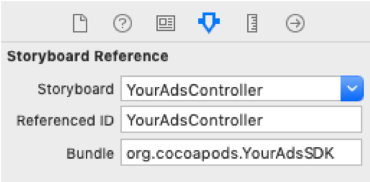

Documentation
Cette partie de la documentation couvre la partie mobile iOS de YourAds. YourAds étant un module SDK que l’on installe en ajout à un autre projet informatique, ce document explique les prérequis, l’installation, et l’utilisation dans un contexte d’une application qui tourne cette SDK.
Prérequis
Pour utiliser YourAds dans votre projet, utilisez les outils suivants :
- - Xcode 9+
- - Une interface de shell (iTerm)
- - CocoaPods 1.4+
- - iOS 8+
1. Votre projet doit être initialisé pour utiliser CocoaPods, un dependency manager pour iOS. Dans le root de votre projet Xcode, lancez la commande suivante dans un shell :
pod init2. C’est ici que vous mettrez les dependencies suivants dont vous aurez besoin pour utiliser YourAdsSDK :
pod ‘YourAds’, :path => ‘[PATH VERS SDK]’3. Pour installer les dependencies, lancez la commande suivante :
pod installImportez YourAds. Il se peut qu'il ne soit pas reconnu par XCode avant la compilation; ignorez cette erreur. Ajoutez un objet YourAdsHelper dans le controller d'où vous voulez lancer le controller YourAds pour le visionnage des publicités et assurez qu'il soit bien initialisé avant tout autre action.
import YourAdsSDK
class ViewController: UICollectionViewController {
let yourAdsHelper: YourAdsHelper
required init?(coder aDecoder: NSCoder) {
yourAdsHelper = YourAdsHelper()
super.init(coder: aDecoder)
}
Mettre en place un segue vers YourAdsController à travers un Storyboard Reference dans votre storyboard. La reference doit avoir les détails suivants en paramètre :  Load
Dans votre controller actuel, ajoutez le code suivant pour permettre une initialisation correcte de YourAdsController en lui indiquant à partir d’où il va jouer dès son activation ; vous devrez insérer vos propres détails de storyboard ici dont son ‘Storyboard ID’ qui se trouve dans l’inspecteur.
override func prepare(for segue: UIStoryboardSegue, sender: Any?) {
if let destinationVC = segue.destination as? YourAdsController {
if (segue.identifier == "yourSegue") {
destinationVC.yourAdsHelper = yourAdsHelper
destinationVC.previousStoryboardName = "Main"
destinationVC.previousControllerId = "ViewController"
}
}
}
En lançant votre segue, le YourAdsController devra maintenant se présenter, tourner une publicité, enregistrer les données de la caméra et revenir à votre controller initial après le visionage de la publicité ou en appuyant sur le boutton back.